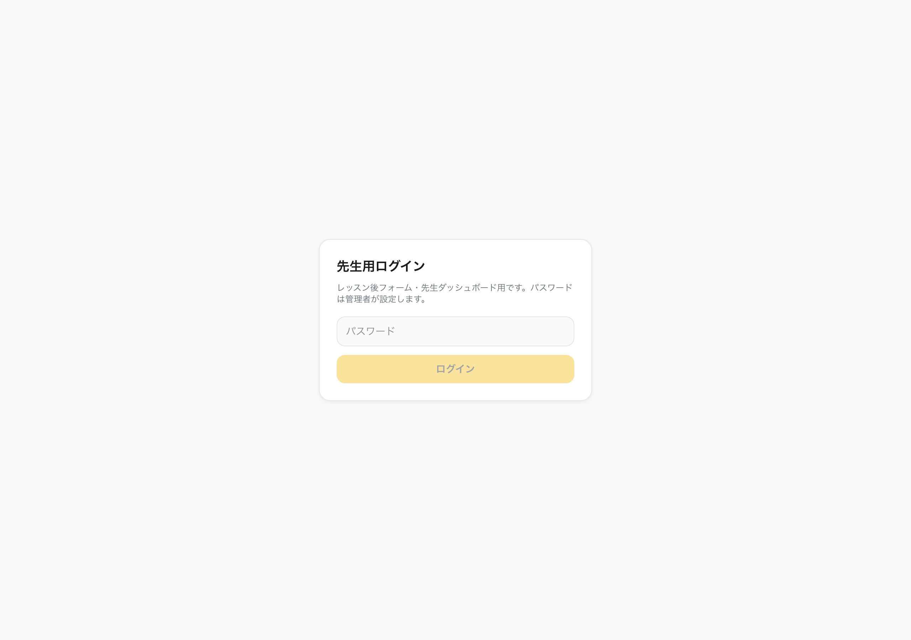
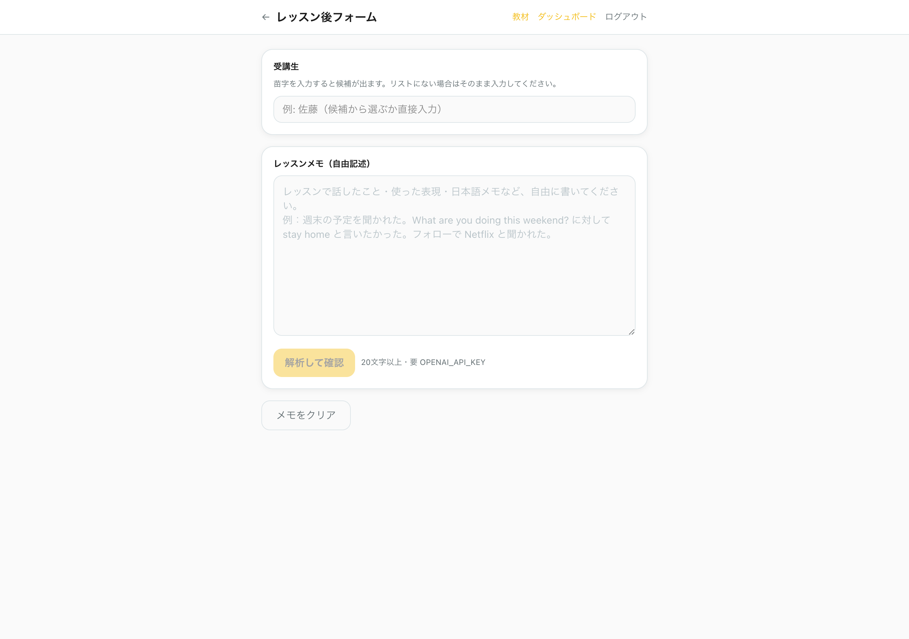
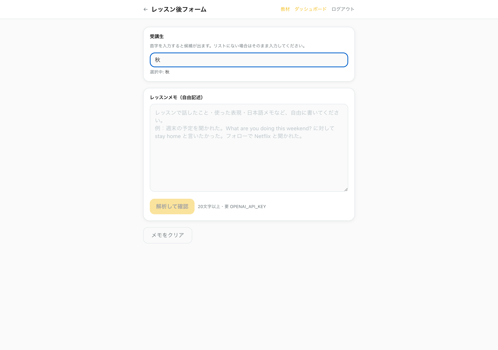
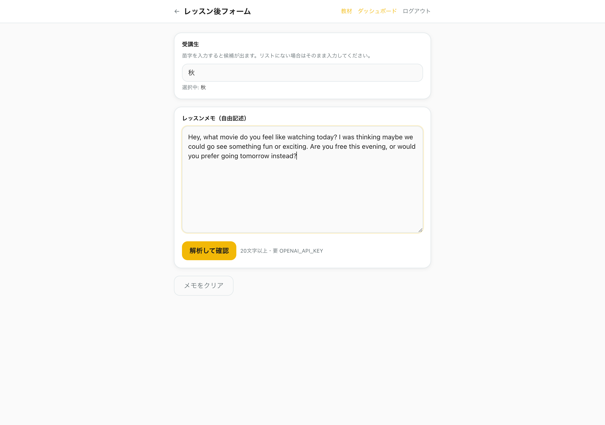
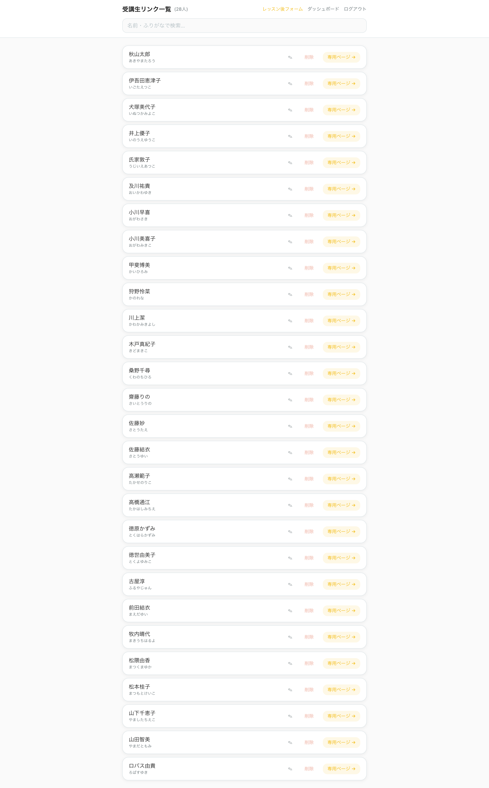
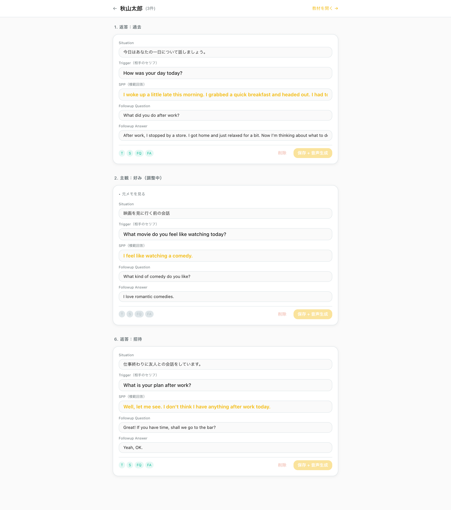
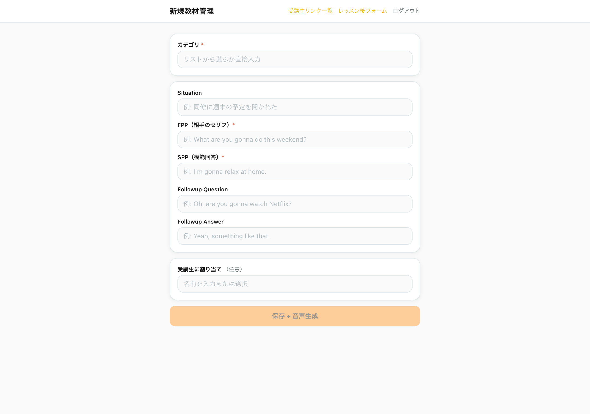
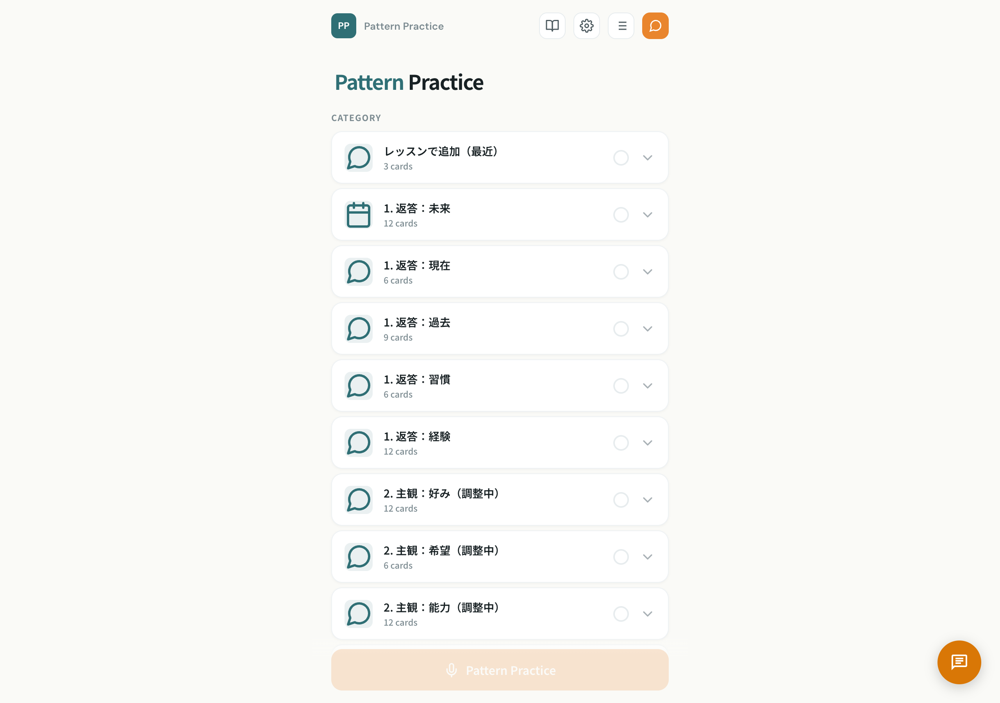

ペラトレ教材生成システム
操作マニュアル
レッスン後に先生がフォームに入力するだけで、
受講生専用の練習教材が自動で作成されます。
全体の流れ
2
受講生を選んでレッスンメモを入力
レッスンで話した内容を自由に書くだけ
3
AIが自動で教材フォーマットに変換
situation / trigger / 模範回答 / フォローが自動生成されます
4
チャンクを選んで保存
内容を確認して保存。音声も自動生成されます
5
受講生専用ページに自動反映!
受講生が専用リンクを開くと、追加した教材で練習できます
1
ログイン

以下のURLにアクセスして、パスワードを入力してログインします。
先生用ログインページ
https://peratore-dashboard.vercel.app/teacher/login
1
パスワードを入力して「ログイン」ボタンを押します。パスワードはMasaさんから共有されたものを使ってください。
2
ログインするとレッスン後フォームのページに移動します。
ログイン状態はブラウザに記憶されます。一度ログインすれば、次からはパスワード入力なしでアクセスできます。
2
レッスン後フォームの使い方
レッスンが終わったら、このフォームで受講生の名前とレッスンメモを入力するだけです。あとはAIが自動で教材フォーマットに整えてくれます。

STEP 1: 受講生を選ぶ

1
受講生名を入力します。苗字を入力すると候補が表示されます。
2
リストにない場合はフルネームをそのまま入力してください。
STEP 2: レッスンメモを入力する

1
レッスンメモにレッスンで話した内容を自由に書きます。日本語でも英語でもOKです。
書き方のコツ: FPP（相手のセリフ）、SPP（模範回答）、追加質問、追加回答を意識して書くと、AIの解析精度が上がります。ただし、メモなので雑でも大丈夫です!
メモの例:
「週末の予定を聞かれた。What are you doing this weekend? に対して stay home と言いたかった。フォローで Netflix と聞かれた。」
長文を入れた場合は、AIが自動で複数チャンクに分割してくれます。
STEP 3: 「解析して確認」を押す
!
「解析して確認」ボタンを押すと、AIがメモを解析してプレビュー画面を表示します。20文字以上の入力が必要です。
3
AI解析結果の確認とチャンク選択
AIがレッスンメモを解析すると、チャンク（会話のかたまり）ごとに分割された結果が表示されます。
1
各チャンクにはSituation（場面）、FPP（相手のセリフ）、SPP（模範回答）、Followup Question、Followup Answerが自動生成されています。
2
内容を確認して、使いたいチャンクにチェックを入れます。全部使っても、一部だけでもOKです。
3
長文の場合は複数のチャンクが生成されます（かぶりはないようにAIが調整します）。
確認ポイント: SPP（模範回答）が長すぎる場合は、AIが1文に簡潔にまとめます。不自然に感じたら、保存後に「受講生例文の修正」から直せます。
!
チャンクを選択したら「保存 + 音声生成」ボタンを押します。音声が自動生成され、受講生の専用ページに即反映されます。
保存完了後
保存が完了すると「〇〇さんの教材を確認 →」というリンクが表示されます。
タップすると、受講生専用の練習ページが開きます。
4
受講生リンク一覧

全受講生のリストが表示されます。ここから例文の修正や専用ページの確認ができます。
受講生リンク一覧ページ
https://peratore-dashboard.vercel.app/teacher/students
1
名前・ふりがなで検索できます。受講生が多い場合に便利です。
2
「削除」ボタン — その受講生に割り当てた例文を確認・編集するページに移動します。
3
「専用ページ →」ボタン — 受講生の練習ページを直接開きます。受講生にこのリンクを共有してください。
新しい受講生は、レッスンフォームで名前を入力した時点で自動的にリストに追加されます。手動で登録する必要はありません。
5
受講生の例文を修正する

受講生リンク一覧から受講生名をクリックすると、その受講生に割り当てられた全ての例文が表示されます。
1
各例文のフィールド（Situation、Trigger、SPP、Followup Question、Followup Answer）を直接編集できます。テキストをクリックして書き換えてください。
2
T / S / FQ / FA ボタン — 各音声を個別に再生して確認できます。
3
「保存 + 音声再生成」ボタン — 例文を修正した後、このボタンで保存と音声の再生成を行います。
5
「教材を見る →」リンク（右上）— この受講生の練習ページを開いて、実際の表示を確認できます。
例文を修正すると音声も自動で再生成されます。修正したら必ず「保存 + 音声再生成」を押してください。
6
新規教材を手動で作成する

レッスンメモからの自動生成ではなく、個別に教材を手動で追加したい場合はこのページを使います。
新規教材管理ページ
https://peratore-dashboard.vercel.app/teacher/dashboard
1
カテゴリ — リストから選ぶか、新しいカテゴリ名を直接入力します。
2
Situation — 場面の説明（日本語）。例:「同僚に週末の予定を聞かれた」
3
FPP（相手のセリフ） — 必須。相手が言うセリフ。例:「What are you gonna do this weekend?」
4
SPP（模範回答） — 必須。受講生が言う回答。例:「I'm gonna relax at home.」
5
Followup Question / Answer — 任意。2往復目の会話。
6
受講生に割り当て — 任意。特定の受講生に紐づける場合は名前を入力します。空欄にすると全員共通の教材になります。
!
「保存 + 音声生成」を押すと、教材が保存され音声が自動生成されます。
7
受講生の専用ページを確認する

受講生の専用ページでは、共通のベース教材に加えて、先生がレッスンで追加した個別教材が「レッスンで追加（最近）」カテゴリとして表示されます。
1
「レッスンで追加（最近）」カテゴリに、先生が追加した教材が表示されます。受講生はこれを選んで練習できます。
2
それ以下のカテゴリは全受講生共通のベース教材です。これらは修正不可で、全員が同じ内容で練習します。
受講生に専用ページのリンクを送るには、受講生リンク一覧から「専用ページ →」をクリックしてURLをコピーしてください。
8
注意事項
よくある間違い
- ログインURLと受講生ページを混同しない — 先生用ページ（/teacher/...）と受講生用ページ（/practice-v2.html?student=...）は別物です。受講生にはログインURLを送らないでください
- チャンクを選択しないとリンクが生成されない — AI解析後、使いたいチャンクにチェックを入れてから「保存」を押してください
- 名前の表記を統一する — 「秋山太郎」で登録した受講生は、毎回同じ表記で入力してください。「あきやまたろう」等で入力すると別の受講生として扱われます
困ったときは
操作で分からないことがあれば、Masaさんに連絡してください。
例文の内容に問題があった場合は、受講生リンク一覧から修正できます。